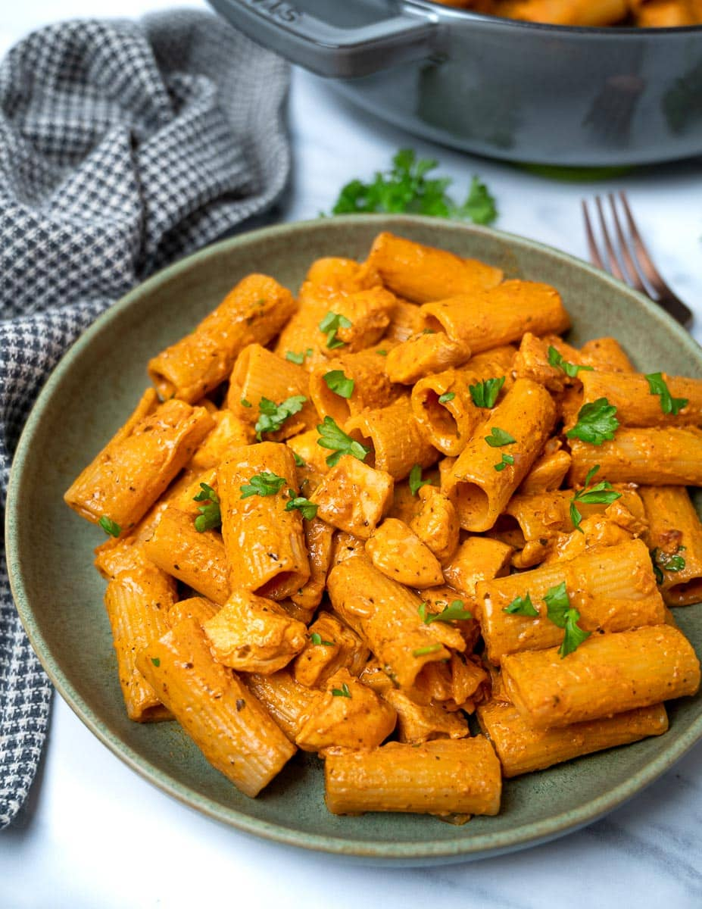

Chicken Pasta

What is Chicken Pasta?
This easy creamy spicy chicken pasta is comfort food at its best. It's a very simple chicken pasta recipe that you can throw together in 30 minutes for a creamy dinner with a bit of a kick.
Ingredients
- 250 g (9 oz) rigatoni
- 1 tablespoon olive oil
- 20 g (1.5 tbsp) unsalted butter
- 350 g (12 oz) chicken breast, diced
- 1 large shallot, finely chopped
- 2 large garlic cloves, finely chopped
- 1 teaspoon smoked paprika
- 1 teaspoon onion granules
- 1 teaspoon dried oregano
- ¼ teaspoon ground black pepper
- ¼ teaspoon cayenne pepper
- 1 tablespoon tomato paste
- 250 ml (8.5 fl oz) chicken stock
- 75 g (2.5 oz) cream cheese
- 30 g (1 ounce) grated parmesan
- 1 tablespoon fresh parsley, chopped
Steps
- Bring a large pot of water to boil, salt it generously, and cook the pasta according to the instructions on the package. Reserve a bit of pasta water before draining.
- Meanwhile, heat the olive oil in a large pan, then add the butter. When the butter has melted, add the chicken breast and cook it for 5-6 minutes until slightly golden.
- Add the shallot and garlic and cook for another minute until fragrant. Next, add the smoked paprika, onion granules, dried oregano, ground black pepper and cayenne pepper and stir to combine.
- Stir in the tomato paste, then add the chicken stock and bring a boil. Lower the heat and stir in the cream cheese. Break it down with your spoon until it dissolves completely in the sauce.
- Transfer the pasta to the pan and stir to combine. Add a splash of pasta water if it looks too thick.
- Next, stir in the grated parmesan and fresh parsley. Divide the pasta into bowls and serve with extra parmesan on top if you like.